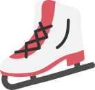
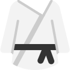

משחקים מתוקשבים למכביה
משחקים מועדפים:
לא הוספו משחקים מועדפים
משחקים לפי סוגי ספורט:
סינון לפי
-
כדורגל
ענף ספורט בו משתתפות 2 קבוצות שמטרת כל אחת מהן היא הכנסת כדור לתוך שעריה של השנייה. -
טניס
משחק כדור בין שני שחקנים או 2 זוגות שחקנים. מטרת המשחק לחבוט בכדור אל עבר צדו השני של המגרש. -
כדורסל
משחק כדור בין שני שחקנים או 2 זוגות שחקנים. מטרת המשחק לחבוט בכדור אל עבר צדו השני של המגרש -
התעמלות אמנותית
היא אחד מענפי ההתעמלות. זהו ספורט אולימפי שבו המתחרות (נשים בלבד) מבצעות תרגילים המשלבים תנועות בלט, אקרובטיקה ומחול -
בדמינטון
ענף ספורט ממשפחת משחקי הכדור והמחבט, שבו ה"כדור" מורכב מבסיס ונוצות, ונקרא נוֹצִית. -
הוקי קרח
ענף ספורט קבוצתי קצבי ומהיר, אותו משחקים תוך כדי החלקה על קרח, ובאמצעות מקלות ייעודיים בעלי להב מעוקל, המשמשים לחביטת דיסקית עשויה גומי מגופר אל תוך שער הקבוצה היריבה כדי להבקיע אותו. -
רוגבי
משחק כדור אליפטי קבוצתי, מטרת המשחק לצבור נקודות רב מהקבוצה היריבה על ידי הנחת הכדור במנחת. -

גלישה
תחרות בה מדגימים ביצועים בפרק זמן קצוב וצוות שופטים מחלק ציונים על פי מספר כללים וקטגוריות. -
גולף
ספורט שבו על השחקן להעיף כדור קטן לאורך מסלול שעיקרו דשא טבעי באמצעות מחבטים ולקלוע במספר מינימלי של חבטות את הכדור לתוך גומה בקרקע שבקצה המסלול. -

קארטה
אומנות יפנית וספורט לחימה בעלת 7 דרגות לימוד. משלבת מכות ולוחמת ידיים פתוחות, ללא נשק ותוך שימוש בבעיטות, בברכיים ובמרפקי הידיים.